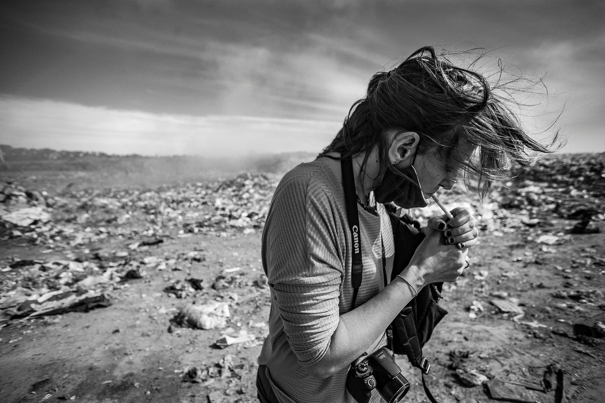

Nací en Buenos Aires el 14 de octubre de 1978. Estudié fotografía con varios maestros y de
manera
autodidacta desde los 18 años. Actualmente trabajo como fotógrafa en la Casa Nacional del
Bicentenario - Ministerio de Cultura de la Nación Argentina y como fotoperiodista para diversos
medios de comunicación nacionales e internacionales. Me recibí en el 2017 de Pedagoga Social con
orientación en antropología educativa, profesión que me permitió ampliar la mirada en las
comunidades afectadas por las desigualdades sociales y territoriales durante 15 años. Participé
de
varios colectivos fotográficos independientes, entre ellos Argentina Arde y La Red de acción
fotográfica y de publicaciones fotográficas para el Museo Etnográfico, Museo del Grabado, el
Centro
de Arte Sonoro, la Universidad de Hurlingham, Sipreba, con una mención del Mercosur en el
Concurso
fotográfico “Personas Mayores: Derecho al Cuidado” y en el proyecto Onewater de la Unesco. En el
año
2019 comencé a registrar en los territorios las problemáticas vinculadas a la tierra y al agua a
causa del extractivismo, la megaminería y la explotación de litio en distintos lugares de
Argentina.
Soy coautora del libro “La ruta del litio: Voces del agua” editado por Chirimbote.
Como dice Charles Bukowski “Encuentra lo que amas y deja que te mate”
